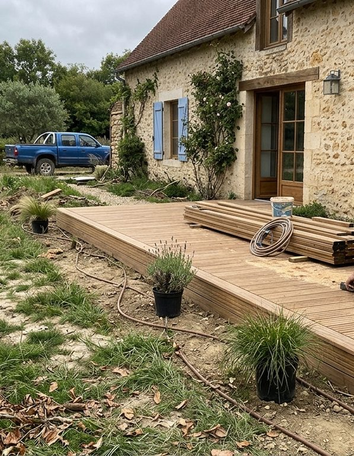
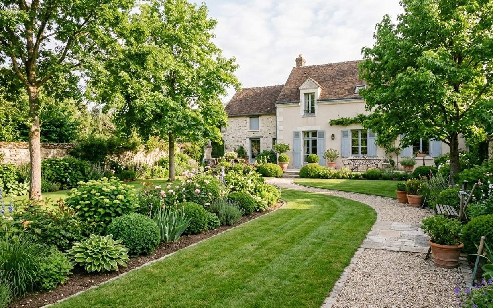

Aménagement extérieur
L'entreprise vous accompagne pour aménager et structurer les extérieurs de votre propriété.
En savoir plus
Garden Design Evolution · Dourdan (91)
Olivier Odinot, dirigeant
Garden Design Evolution est une entreprise d'aménagement paysager basée à Dourdan, en Essonne. Décrivez-lui votre projet pour obtenir un devis.
Aménagement paysager en Essonne
Devis sur demande · Dourdan (91)
Nos prestations
Des interventions à préciser ensemble selon votre terrain et votre demande.

L'entreprise vous accompagne pour aménager et structurer les extérieurs de votre propriété.
En savoir plus
Du projet à la réalisation, selon votre terrain et vos envies.
En savoir plus
À propos
Garden Design Evolution est une entreprise d'aménagement paysager basée à Dourdan, en Essonne. Elle est dirigée par Olivier Odinot.
Appelez pour décrire votre projet et organiser un premier échange.
Olivier Odinot, dirigeant

Contact
Appelez-nous pour décrire votre projet et demander un devis.
© GARDEN DESIGN EVOLUTION · Maquette de démonstration